放在前面的话：
这份笔记是在大二下刚开学的时候进行书写的，主要参考的是Acwing的蓝桥杯辅导课 ，笔者在成体系的学习算法之前已经学习过基本的数据结构 ，以及离散数学。（PS: y总讲课很好，如果可以建议报一下试试）
基础概念
1s内c++可以运算一亿次即1e8次，因此我们的最大次数小于1e7到1e8之间便可以
int的范围约为[-2e9,+2e9]，最大值可以通过 0x7fffffff 来表示，long long的范围是 [- 1e18，+1e18]
由数据范围反推算法复杂度以及算法内容：
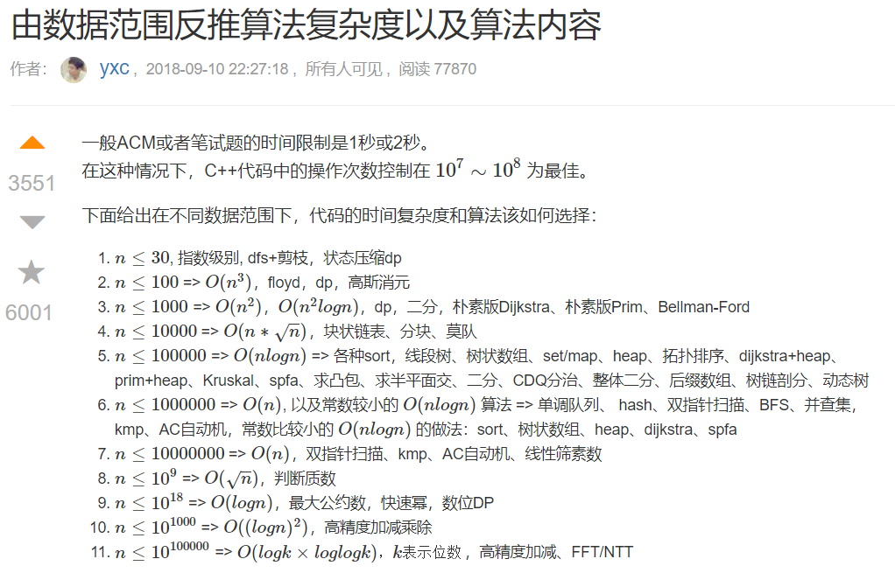
下取整 （int）直接除
上取整：转化成下取整
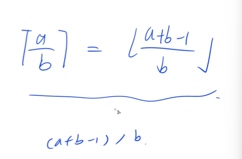
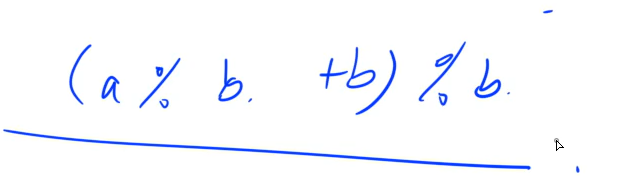
输入技巧
1 2 3 4 5 6 7 8 9 #include <string> #include <sstream> getline (cin,str);while (cnt--) { getline (cin,str); stringstream ssin (str) ; while (ssin>>a[n]) n++; }
递归与递推
递归：把问题分成若干个相同子问题
递推：由子问题推出最终问题
二分
整数二分
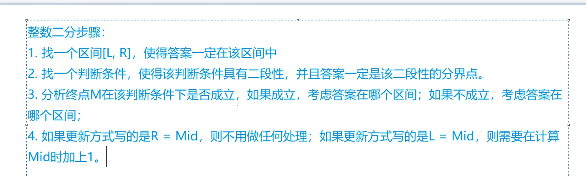
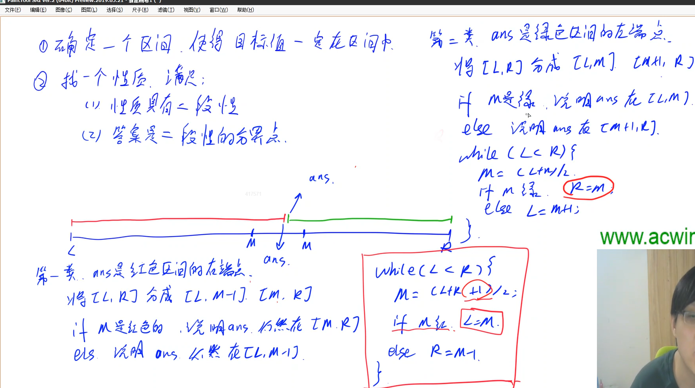
y总模板
1 2 3 4 5 6 7 8 9 10 11 12 13 14 15 16 17 18 19 20 int bsearch_1 (int l, int r) while (l < r) { int mid = l + r >> 1 ; if (check (mid)) r = mid; else l = mid + 1 ; } return l; } int bsearch_2 (int l, int r) while (l < r) { int mid = l + r + 1 >> 1 ; if (check (mid)) l = mid; else r = mid - 1 ; } return l; }
记忆技巧：
如果我们想要的点x是左部分的右端点 ，则区间分为 [l,mid-1] ,[mid ,r]
如果我们想要的点x是右部分的左端点 ，则区间分为 [l,mid ] ,[mid+1,r]
即我们想要的x是什么方向的端点，mid就在哪个部分，只要l=mid出现计算mid的时候一定要加一
前缀和
一定要将下标加一，不然遇见s[i-1]会出问题
一维前缀和
利用数列的思想：
二维前缀和
与一维前缀和思想类似:
容斥原理 :
在计数时，必须注意没有重复，没有遗漏。为了使重叠部分不被重复计算，人们研究出一种新的计数方法，这种方法的基本思想是：先不考虑重叠的情况，把包含于某内容中的所有对象的数目先计算出来，然后再把计数时重复计算的数目排斥 出去，使得计算的结果既无遗漏又无重复，这种计数的方法称为容斥原理
1.计算前缀和矩阵 2.利用前缀和矩阵计算子矩阵的和
差分
前缀和的逆应用
在指定的区间内统一加上或者减去一个数字
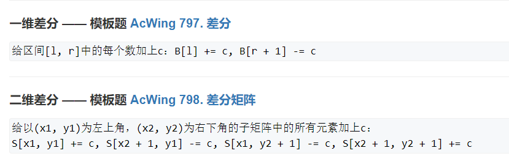
输入一个 n 行 m列的整数矩阵，再输入 q 个操作，每个操作包含五个整数 x1,y1,x2,y2,c1,1,2,2,，其中 (x1,y1)和 (x2,y2)表示一个子矩阵的左上角坐标和右下角坐标。
每个操作都要将选中的子矩阵中的每个元素的值加上 c。
请你将进行完所有操作后的矩阵输出。
输入格式
第一行包含整数 n,m,q,。
接下来 n 行，每行包含 m 个整数，表示整数矩阵。
接下来 q 行，每行包含 55个整数 x1,y1,x2,y2，c表示一个操作。
输出格式
共 n 行，每行 m 个整数，表示所有操作进行完毕后的最终矩阵。
输入样例：
1 2 3 4 5 6 7 3 4 3 1 2 2 1 3 2 2 1 1 1 1 1 1 1 2 2 1 1 3 2 3 2 3 1 3 4 1
输出样例：
1 2 3 4 5 6 7 8 9 10 11 12 13 14 15 16 17 18 19 20 21 22 23 24 25 26 27 28 29 30 31 32 33 34 35 36 37 38 39 40 41 42 #include <iostream> #include <cstdio> using namespace std;const int N = 1010 ;int a[N][N],n,m,q;int main () scanf ("%d%d%d" ,&n,&m,&q); for (int i=1 ;i<=n;i++) { for (int j=1 ;j<=m;j++) { int x; scanf ("%d" ,&x); a[i][j]+=x; a[i+1 ][j]-=x; a[i][j+1 ]-=x; a[i+1 ][j+1 ]+=x; } } int x1,y1,x2,y2,c; for (int i=1 ;i<=q;i++) { scanf ("%d%d%d%d%d" ,&x1,&y1,&x2,&y2,&c); a[x1][y1]+=c; a[x2+1 ][y1]-=c; a[x1][y2+1 ]-=c; a[x2+1 ][y2+1 ]+=c; } for (int i=1 ;i<=n;i++) for (int j=1 ;j<=m;j++) a[i][j]+=a[i-1 ][j]+a[i][j-1 ]-a[i-1 ][j-1 ]; for (int i=1 ;i<=n;i++) { for (int j=1 ;j<=m;j++) printf ("%d " ,a[i][j]); puts ("" ); } return 0 ; }
一维差分
二维差分
数学知识
尽力分析
打表找规律
裴蜀定理
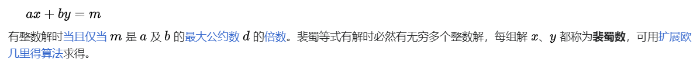
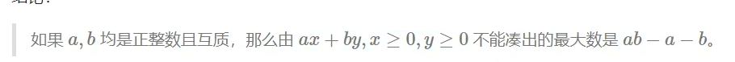
最大公因数
1 2 3 4 5 int gcd (int a, int b) return b ? gcd (b, a % b) : a; }
朴素筛质数 1 2 3 4 5 6 7 8 9 10 11 12 13 int primes[N], cnt; bool st[N]; void get_primes (int n) for (int i = 2 ; i <= n; i ++ ) { if (st[i]) continue ; primes[cnt ++ ] = i; for (int j = i + i; j <= n; j += i) st[j] = true ; } }
枚举 模拟 排序
归并排序模板
计算逆序对
1 2 3 4 5 6 7 8 9 10 11 12 13 14 15 16 17 18 19 20 21 22 LL merge_sort (int q[],int l,int r) LL cnt=0 ; if (l>=r) return 0 ; int mid=l+r>>1 ; cnt+=merge_sort (q,l,mid)+merge_sort (q,mid+1 ,r); int i=l,j=mid+1 ,k=0 ; while (i<=mid&&j<=r) { if (q[i]<=q[j]) tmp[k++]=q[i++]; else { cnt+=mid-i+1 ; tmp[k++]=q[j++]; } } while (i<=mid) tmp[k++]=q[i++]; while (j<=r) tmp[k++]=q[j++]; for (int i=l,j=0 ;i<=r;i++,j++) q[i]=tmp[j]; return cnt; }
树状数组与线段树
前者精密 后者处理范围广
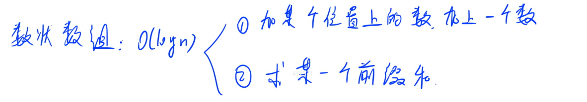
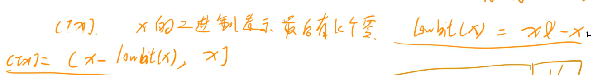
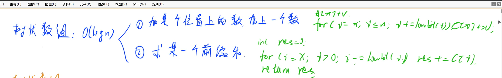
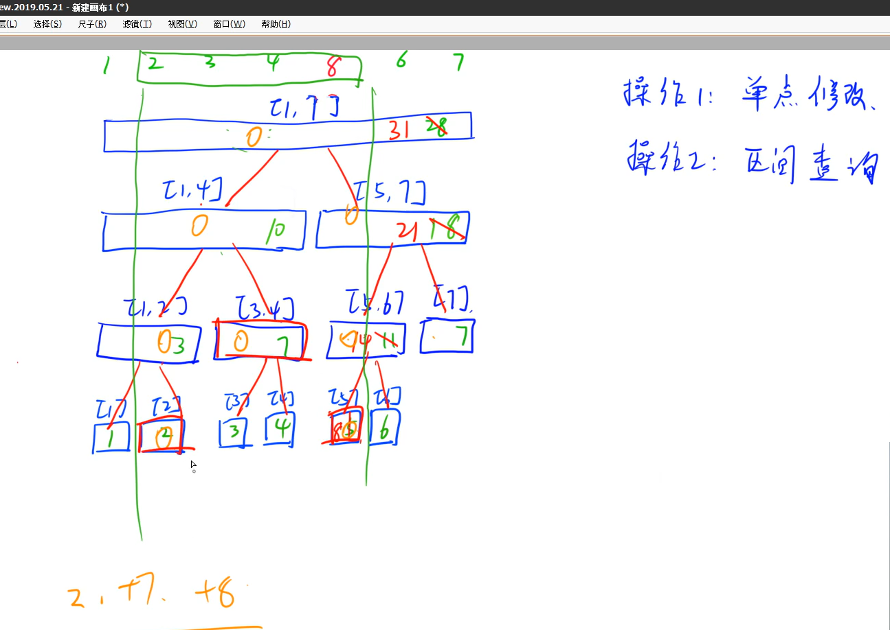
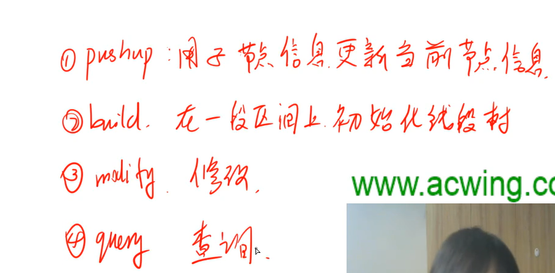
线段树节点的个数最多是4n，存储方式和堆的存储方式一样，使用一维数组存储，下标为x的节点的父节点是x/2（x>>1） 左儿子是2x 右儿子是2x+1
位运算
求n的第k位数字: n >> k & 1
快速幂
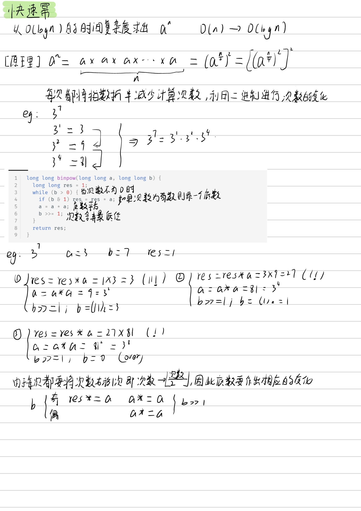
1 2 3 4 5 6 7 8 9 10 ll quick_power (ll n, ll p) { ll res = 1 ; while (p){ if (p & 1 ) res *= n; n *= n; p >>= 1 ; } return res; }
高精度计算
大数加法
课程
没有考虑负数的情况
b站大数加法
1 2 3 4 5 6 7 8 9 10 11 12 13 14 15 16 17 18 19 20 21 22 23 24 25 26 27 28 29 30 31 32 33 34 35 36 37 38 39 40 41 42 43 44 45 46 47 48 49 50 51 52 53 54 string vector2string (vector<int >& x, int s, bool flag = 1 ) string ans (s, '0' ) ; for (int i = 0 ; i < s; i++) { ans[i] = '0' + x[i]; } reverse (ans.begin (), ans.end ()); if (!flag) ans.insert (0 ,"-" ); return ans; } string add (string& num1, string& num2) vector<int > a (num1.size(), 0 ) ; vector<int > b (num2.size(), 0 ) ; for (int i = 0 ; i < num1.size (); i++) { a[num1.size () - i - 1 ] = num1[i] - '0' ; } for (int i = 0 ; i < num2.size (); i++) { b[num2.size () - i - 1 ] = num2[i] - '0' ; } vector<int > c (num1.size() + num2.size(), 0 ) ; int len = num2.size (); if (num2.size () > num1.size ()) len = num1.size (); int i = 0 ; for (i = 0 ; i < len; i++) { c[i]+= a[i] + b[i]; c[i + 1 ] += c[i] / 10 ; c[i] %= 10 ; } if (num1.size () > num2.size ()) { for (; i < num1.size (); i++) c[i] += a[i]; } if (num1.size () < num2.size ()) { for (; i < num2.size (); i++) c[i] += b[i]; } len = num1.size (); if (num2.size () > num1.size ()) len = num2.size (); while (c[len] == 0 ) { len--; } string ans = vector2string (c, len + 1 ); return ans; }
练习
力扣 字符串加法
大数减法
课程
b站
1 2 3 4 5 6 7 8 9 10 11 12 13 14 15 16 17 18 19 20 21 22 23 24 25 26 27 28 29 30 31 32 33 34 35 36 37 38 39 40 41 42 43 44 45 string divide (string& num1, string& num2) char flag = '+' ; if (num1.size () < num2.size () || (num1.size () == num2.size () && num1 < num2)) { swap (num1, num2); flag = '-' ; } vector<int > a (num1.size(), 0 ) ; vector<int > b (num2.size(), 0 ) ; for (int i = 0 ; i < num1.size (); i++) { a[num1.size () - i - 1 ] = num1[i] - '0' ; } for (int i = 0 ; i < num2.size (); i++) { b[num2.size () - i - 1 ] = num2[i] - '0' ; } vector<int > c (num1.size(), 0 ) ; int len = num2.size (); int i = 0 ; for (i = 0 ; i < len; i++) { if (a[i] < b[i]) { a[i] += 10 ; a[i + 1 ]--; } c[i] += a[i] - b[i]; } for (; i < num1.size (); i++) c[i] += a[i]; len=c.size ()-1 ; while (c[len] == 0 ) len--; string ans; if (flag == '-' ) { ans = vector2string (c, len + 1 , 0 ); } else ans = vector2string (c, len + 1 ); return ans; }
大数乘法
b站 高精度算法
1 2 3 4 5 6 7 8 9 10 11 12 13 14 15 16 17 18 19 20 21 22 23 24 25 26 27 28 29 30 31 32 33 string mulity (string& num1, string& num2) vector<int > a (num1.size() + 1 , 0 ) ; vector<int > b (num2.size() + 1 , 0 ) ; vector<int > c (num1.size() + num2.size() + 1 , 0 ) ; int i = 0 ; for (i = 0 ; i <= num1.size (); i++) { a[num1.size () - i] = num1[i] - '0' ; } for (i = 0 ; i <= num2.size (); i++) { b[num2.size () - i] = num2[i] - '0' ; } int j = 0 ; for (i = 1 ; i <= num2.size (); i++) { for (j = 1 ; j <= num1.size (); j++) { c[i + j - 1 ] += b[i] * a[j]; c[i + j] += c[i + j - 1 ] / 10 ; c[i + j - 1 ] %= 10 ; } } int len = c.size () - 1 ; while (c[len] == 0 ) { len--; } string ans = vector2string (c, len + 1 ); ans = ans.substr (0 , ans.size ()-1 ); return ans; }
动态规划（dp）
暴力dfs->记忆化搜索–>递推（dp）
记忆化搜索 = 暴力dfs+记录答案
递推的公式 = dfs向下递归的公式
dp的重点在于状态转移方程，即从树的最下层向上归的过程
跳楼梯
大盗阿福
背包问题
状态表示
状态计算
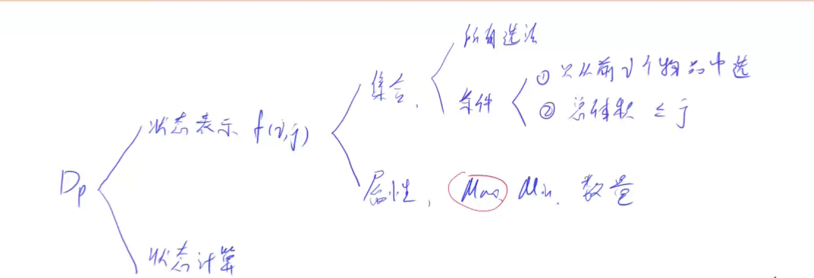
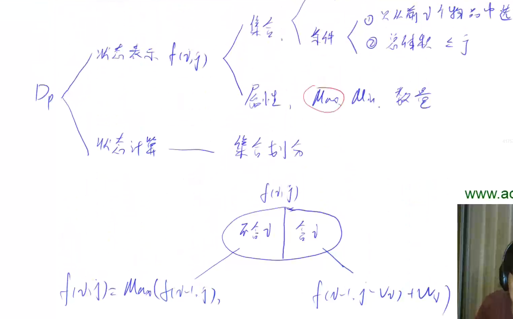
注意：右边的子集不一定存在只有 当 j >= v[i]的时候才存在
之后转化为一维
0-1背包问题
已知一个背包容积为V，现在有N个物品，每个物品有一个价值Wi，一个体积Vi，每件物品最多用一次，求可以选择的总价值最大。
完全背包问题
每件物品有无限个
多重背包问题
每个物品有有限个
分组背包问题
每一组最多选择一个物品
[mid+1, r]: